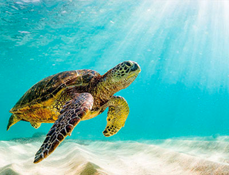
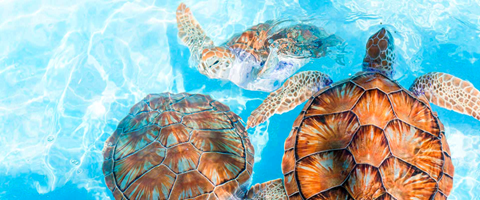

Sri Lanka is home to five species of sea turtles, which are the Green turtle, Olive Ridley turtle, Loggerhead turtle, Hawksbill turtle, and Leatherback turtle.
These turtles play a key role in the ecosystem by maintaining the balance of marine life. However, their populations have been declining due to various human activities such as poaching, pollution, and habitat destruction.
The Sri Lankan government and several conservation organizations have taken measures to protect these species and their habitats. These efforts include monitoring nesting sites, conducting awareness programs, and implementing
laws to prevent illegal activities. Despite these efforts, the turtle population in Sri Lanka is still facing threats and requires continuous efforts to ensure their survival.
Sri Lanka is home to five species of sea turtles, which are the Green turtle, Olive Ridley turtle, Loggerhead turtle, Hawksbill turtle, and Leatherback turtle.
These turtles play a key role in the ecosystem by maintaining the balance of marine life. However, their populations have been declining due to various human activities such as poaching, pollution, and habitat destruction.
The Sri Lankan government and several conservation organizations have taken measures to protect these species and their habitats. These efforts include monitoring nesting sites, conducting awareness programs, and implementing
laws to prevent illegal activities. Despite these efforts, the turtle population in Sri Lanka is still facing threats and requires continuous efforts to ensure their survival.
Marine Turtles are a successful group of animals that have witnessed the rise and fall of the dinosaurs. They have inhabited the earth for over 100 million years and survived in vast numbers until the recent past.
They have evolved from large, land-living tortoise-like animals. Their body consists of a head, short neck, pair of long fore flippers, pair of short and rounded hind flippers and a tail. The upper carapace and lower
plastron make a protective structure (box) for internal organs. Unlike tortoises and freshwater terrapins, they are unable to withdraw their head and limbs into them. Marine turtles do not have teeth, but their sharp,
beak-like jaws can crush, tear or bite depending on their diet, which varies according to species.
Turtles are reptiles (Class: Reptilia, Order: Chelonia) hence cold-blooded animals. Therefore, the environment determines their body temperature. In the morning, marine turtles ‘’sunbathe’ at the surface of the sea
to increase their body temperature. In the morning, marine turtles ‘’ sunbathe’ at the surface of the sea to increase their body temperature. They have lungs to breathe air. Turtles rise to the surface to breathe every
– 30 minutes. Over millions of years, they have become very admirably adapted to living in a marine environment. With their long and muscular oar-like fore flippers, rudder-like hind flippers and their flattened, streamlined
shells, marine turtles are fast and agile swimmers.

The only time marine turtles leave the ocean is when the females come ashore to nest.
In some areas they can be seen having their ‘’sunbathe’ on beaches or rocks. The males spend all their time at sea, and little is known about their habits.
Most species are highly migratory, moving between nesting and feeding grounds, which can be thousands of kilometers apart. We do not know exactly how long turtles live,
but they are assumed to have a life span greater than 80 years. Time taken for sexual maturity depends on the species.
The olive Ridley Turtle, the smallest, takes 7 to 15 years, while the herbivorous Green Turtle might take 50 years! The remaining species, including the largest Leatherback
Turtle, takes 20 to 30 years.
Until maturity it is difficult to distinguish between male and female turtles when they reach maturity. Male turtles develop a long claw on each
fore flipper and long tail. The way that an egg-burdened female finds her way to her nesting beach is still a mystery Some scientists believe that marine turtles are sensitive
to earth’s magnetic field and use it for navigation. They are often found using not only the same sandy beach but also the very same stretch of beach they used in previous years.
Hybrids and Albino specimens could be seen among the marine turtle species. Today seven species of these ocean dwelling reptiles representing two families, Cheloniidae and Dermochelyidea remain.
All of them are now threatened with extinction due to man’s destructive activities.
Read More